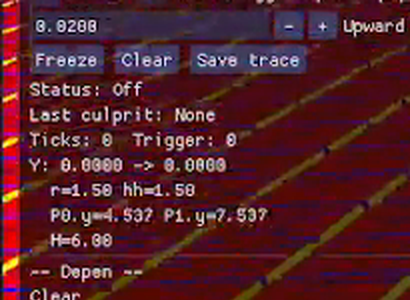
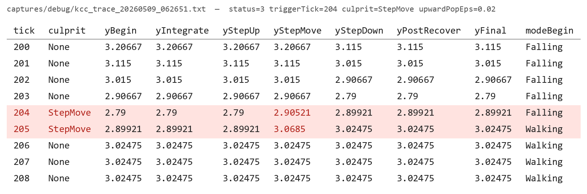
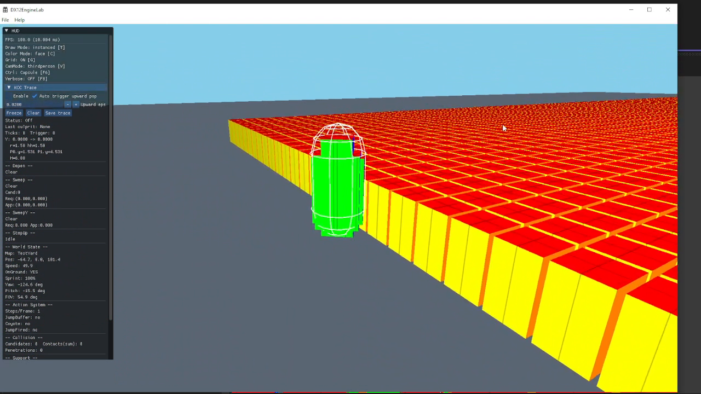

![이대규 프로필 사진]()
| 2 | 1 · DX12EngineLab — C++17 / DirectX 12 엔진 랩개인 · 2026.01–05 상세 → p.7 01 구조 · p.8 02 충돌 시맨틱 |
|---|---|
| 3 | 2 · webserv — C++98 / POSIX 이벤트 구동 HTTP 서버42 Seoul 3인 · 2023 상세 → p.10 03 파일 I/O를 이벤트로 |
| 4 | 3 · RFS — React 16 내부를 pure JS로3인 리드 · 2023.11–2024.04 |
| 5 | 4 · AI — second brain: 나를 문서로 만들어 매 세션 로드한다Obsidian + Claude Code · 2026.05– |
| 12 | 부록 · 기본기 ↔ 코드참조용 |
본문의 파일:함수 표기와 다이어그램의 상자는 GitHub의 해당 줄로 갑니다.
DX12를 익히려다 보니 GPU를 깊게 이해하게 됐고, 자원을 어떻게 관리하면서 렌더해야 렌더가 올바르게 되는지를 고민해 프레임 링 버퍼와 그것을 관리하는 구조부터 만들었습니다. 그 위에 객체를 코드 기준으로 가장 원시적인 단위(AABB · Triangle, 그리고 캡슐 쿼리)로 나눠 관리하는 SceneQuery를 두고, broadphase와 narrowphase가 정확히 어떻게 일어나는지를 파고든 다음, 그 위의 Kinematic Character Controller(KCC)까지 올라간 프로젝트입니다.
| 원시 문제 | seam(면과 면이 만나는 모서리)과 벽 접촉에서 캐릭터가 위로 뜨고, 계단 사이에 끼고, onGround가 프레임마다 깜빡였습니다. |
|---|---|
| 근본 문제 | Bullet의 CCT 골격에 Unreal CharacterMovement식 보정과 PhysX식 쿼리를 올려 두고, 세 조각이 같은 Hit.normal을 각자 다른 뜻으로 읽고 있었습니다. normal이 어디서 왔고 무슨 뜻인지 정한 곳이 없었습니다. |
| 시도 ✗ | 로그에서 증상이 난 케이스를 찾아, 그 케이스를 처리하는 로직을 하나씩 덧붙이는 식으로 풀었습니다. 코드는 늘어나는데 하나를 막으면 옆 케이스에서 새로 샜습니다. |
| 해결 | 먼저 "이 normal은 무슨 뜻인가"부터 표로 정했습니다. 이동에 쓰는 normal, 겹침을 푸는 normal, 바닥 판정에 쓰는 normal은 서로 다른 것이었습니다. 그 다음 기하를 답하는 코드(SceneQuery)와 이동을 정하는 코드(KCC)를 갈라, 그 사이에서만 뜻을 붙여 넘기게 했습니다. 그 위에서 다시 구현하고 덧댄 패치를 지웠습니다. 함수 단위는 02에 있습니다. |
| 배움 | 정말 복잡한 문제였고, sweep-TOI나 prism처럼 자료가 극히 숨겨져 있는 문제라 그때는 AI로 검색해도 나오지 않아서, PhysX와 Unreal의 해당 소스를, 특히 sweep-triangle 부분을 직접 파고들어야 근본 원리를 알 수 있었습니다. object 계층, broad/narrow가 맞물리는 자리, KCC 시스템, 충돌 math(TOI · CSO · MTD)는 그 과정에서 얻었습니다. |
- 문제한 프레임에서만 생기는 증상이라, 상태 머신의 어느 상태가 어떻게 맞물려 y를 올렸는지 눈으로는 알 수 없었습니다.
- 접근매 틱, 캐릭터 높이 y를 단계마다 기록했습니다. 중력 적분 뒤 · 관통 복구 뒤 · 계단 올라가기 뒤 · 옆 이동 뒤 · 계단 내려가기 뒤 · 마무리 복구 뒤입니다. 최근 256틱을 링에 들고 있다가, 위로 가는 속도가 없는데(점프 중이 아닌데) 한 틱에 y가 0.02 m 넘게 올라간 순간 자동으로 멈추고, 그 뒤 10틱까지 담아 파일로 남깁니다(ClassifyKccTraceCulprit · RecordKccTraceTick · SaveKccTrace). 어느 단계 뒤에서 처음 튀었는지가 곧 범인 단계입니다. 파일 44개에서 필요한 줄을 골라내는 일은 AI가 잘하는 일이라 그쪽에 맡겼습니다.
- 원인tick 204에서 옆 이동(StepMove) 뒤에서만 y가 2.79 → 2.905로 뛰었고, 다른 단계는 전부 2.79 그대로였습니다. 벽·모서리에 닿았을 때 sweep이 돌려준 normal에 위쪽 성분이 섞여 있었고, StepMove가 그것을 그대로 미끄러짐 평면으로 써서 남은 이동을 위로 투영한 것이었습니다(감사 04 §3). 계산이 틀린 게 아니라 "raw normal은 미끄러짐 normal이 아니다"를 정하지 않은 것이라, ①로 돌아갔습니다.
- 배움버그를 눈으로 쫓지 않고, 상태를 기록해 AI로 원인을 좁히는 디버깅. 가설마다 기록할 필드와 반증 조건을 먼저 정한다.


third-party 라이브러리 없이 C++98과 시스템 콜, STL만으로 만든 논블로킹 HTTP/1.1 서버입니다. 제 몫은 이벤트 시스템 · 버퍼 · 파일 관리였습니다. 이벤트 루프는 소켓에서 온 신호를 하나씩 담아 두었다가 큐에 모인 것을 한 바퀴 돌며 처리하고, 그 한 바퀴가 턴입니다. 핵심은 시분할이라 어떤 요청도 한 턴을 오래 잡으면 안 되는데, 문제는 이 순서로 왔습니다.
| 참고 | 비슷한 상황이 Linux 커널 안에서 이미 일어난다고 봤습니다. 한 파일에 대한 다중 접근은 커널이 reader와 writer를 다루는 방식에서, 버퍼는 OS pipe의 고정 크기 조각 연결에서 아이디어를 얻었습니다. |
|---|---|
| 해결 | 한 스레드가 모든 클라이언트를 한 큐에 놓고 돌기 때문에, 어떤 요청도 한 턴을 오래 잡으면 안 됩니다. OS가 프로세스를 시분할하는 것과 같습니다. 그래서 모든 I/O를 턴 단위로 잘랐습니다: 소켓 읽기는 한 턴에 read 한 번(큰 요청 본문은 여러 턴에 나눠 들어옵니다), 응답은 한 턴에 노드 하나, 파일도 한 턴에 청크 하나. 잘라서 보내려면 잘린 조각을 담아 둘 자리가 필요하고, 그것이 노드 리스트입니다. 파일만이 아니라 응답 본문 · CGI 출력 · 캐시 · 로그가 같은 버퍼를 씁니다. 파일 요청은 큐에 올려 두고 턴마다 버퍼를 조금씩 채웁니다. 클라이언트 쪽 write 이벤트는 요청을 다 읽은 순간 만들어져 계속 남아 있고, 매 턴 "파일이 다 찼나"를 확인하다 크기가 맞는 순간부터 노드 하나씩 보냅니다. 작은 요청은 노드 하나, 턴 하나로 끝나므로 100MB 뒤에 갇히지 않습니다. |
| 결과 | 대용량 전송 중에도 단일 스레드가 모든 요청을 계속 진행합니다. Siege 99% 처리율(2023) · 2026-08 Linux/epoll 재검증(정적 페이지 · CGI · 5MB 파일 바이트 동일 · 200 동시 요청). |
| 한계 | 설정 파서는 절대 경로만 받고 주석은 지원하지 않습니다. LRU 용량은 entry 수(4096) 기준이라 바이트 상한이 없습니다. 우선순위 큐는 없어서, 작은 요청이 먼저 끝나는 것은 정책이 아니라 조각이 작아서 생기는 결과입니다. 큰 파일은 버퍼에 다 찬 뒤에야 전송을 시작해 읽기와 전송이 겹치지 않습니다 (README ▸ Known limitations) |
자세한 디테일은 뒤에서 서술하겠습니다 → 03 파일 I/O를 이벤트로
| 문제 | 재귀로 렌더하면 한 상태를 그리는 도중에 멈출 수 없습니다. 상태가 언어의 스택 프레임에 있고, 브라우저는 스레드가 하나라 그동안 입력과 paint가 막힙니다. 한 프레임 16ms 안에서 5ms마다 돌려줘야 사용자가 끊김을 못 느낍니다. |
|---|---|
| 구조 | 스택을 데이터로 옮겼습니다. Fiber는 return / child / sibling 포인터를 가진 객체이고, 순회는 while 루프라 어느 노드에서든 멈추고 이어갈 수 있습니다. 동기 루프와 동시 루프의 차이는 && !shouldYield() 하나입니다(workloop.js:L610–625). 트리는 둘입니다. 화면의 current와 숨은 work-in-progress를 alternate로 잇고, commit은 포인터 교체입니다(createWorkInProgress). |
| 스케줄링 | 멈출 수 있게 되면 "무엇을 먼저 이어갈지"가 생긴다. 클릭 응답과 대량 갱신이 같은 줄에 서면 안 되므로 업데이트마다 마감 시각을 주고(상호작용 150ms · 일반 5,000ms) 마감이 이른 것부터. 구현은 min-heap 두 개(taskQueue · timerQueue, 지연 작업은 sortIndex를 startTime → expirationTime으로 재키잉), 5ms 슬라이스, setTimeout의 4ms 클램프를 피한 MessageChannel입니다 (schedulerHostConfig.js). |
| 한계 | createRoot는 있으나 공개 진입점까지 배선하지 못해 end-to-end 마운트는 되지 않습니다. 마운트 배선까지 못 간 이유는 DOM 이벤트 시스템이었습니다. React 16의 이벤트 파이프라인(브라우저 이벤트 정규화 · 플러그인 5개 · SyntheticEvent 풀링)을 다 옮겼지만, 브라우저마다 갈리는 케이스가 너무 많아 통합 단계에서 그 디버깅을 끝내지 못했습니다. 데모 앱은 없고, Jest 스위트는 ESM 정리 이전 것이라 브라우저 테스트 페이지가 실행 형태입니다 (README ▸ Status) |
| 배움 | 이중 트리, 유저랜드 스케줄러, 스택 pause를 얻었습니다. 그리고 C++만 하던 제가 JS를 mini React를 직접 만들 수 있는 수준까지 끌어올렸고, React의 원리를 소스와 RFC, 스펙으로 파헤쳐야 했습니다. 새로운 스택이 들어와도 같은 방법으로 풀 수 있다는 것을 여기서 배웠습니다. |
해당 소스코드를 분석하며, 특히 파이버의 비동기 렌더링 로직의 이해에 힘을 썼습니다. 기본적으로 리액트는 더블 버퍼링을 사용하고, 각 객체를 트리(파이버)를 기반으로 사용하는데, 해당 부분을 렌더링하기 위해 기본적인 방법인 재귀 방식을 사용한다면, 해당 한 상태를 렌더링하기 위해서는 중간에 멈출 수 없는 상황이 발생합니다. 이를 중간에 멈추고 다음 프레임에 와서 다시 렌더링을 진행하는 것을 가능하게 하는 것이 메인 로직이고, 이를 위해 재귀 구조를 함수 구조로 분해합니다. 또한 이것과 연관되어 각 스테이트의 우선순위에 따른 렌더를 위해 자체 스케줄러를 구현하였습니다. 이 두 가지의 연계가 리액트 핵심 렌더링 로직이라고 볼 수 있고, 이를 이해하는 것이 가장 어려웠던 것 같습니다. 그리고 이를 이해하고 실제로 코드를 진행했을 때 감탄을 금치 못했고 성장을 했음을 느꼈습니다. 또한 운영체제의 스케줄러를 이전에 공부하였던 것들을 이렇게 쓸 수 있음을 배웠습니다.
공부 · 자료 · 이력서 · 하루 기록이 한 볼트 안에서 같은 규칙으로 흐르고, Claude Code가 그 규칙을 읽고 움직입니다. 내 프로필과 취향이 어떻게 만들어지고, 오늘 공부한 것의 레퍼런스가 어디에 남고, 이력서의 주장이 어떻게 코드와 대조되는지를 하나의 운영 체계로 만들었습니다.
| 결과 | 해야 하지만 난이도는 낮고 비용만 높은 일, 그러니까 리마인드, 하루 계획 조립, 내가 무엇을 어떻게 하고 있는지 나중에 찾을 수 있는 형태로 분류해 기록하기, 그리고 그것을 다시 찾기를 전부 이 시스템에 넘겼습니다. 그 결과 지식 · 학습법 · 문제 해결 패턴 · 이력서가 한 곳에서 누적되며 발전하고, 문서가 썩지 않고 쉽게 참조됩니다. 이 문서도 그 안에서 만들어졌습니다. 링크 150여 개를 코드 위치와 자동 대조하고, 코드 감사에서 떨어진 이력서 주장은 플래그로 남아 다음 문서가 다시 쓰지 못합니다. |
|---|---|
| 배움 | AI의 가치는 cost cutting에 있습니다. 사고를 돕기도 하지만, 정말 잘하는 것은 난이도는 낮고 비용이 높은 일입니다. 완벽한 자비스는 만들 수 없지만, 나만의 자비스를 점차 발전시키는 방법을 배우고 있습니다: md 파일로 할 때마다 피드백을 남기면 그것이 축적되고, 그러면서 무엇을 더 해야 할지의 감도, 시스템 자체도 같이 발전합니다. |
dailystudy/ — Obsidian vault · Claude Code · 2026.05 – ├── CLAUDE.md 라우팅 규칙 + profile capsule ├── guides/ 11 profile.md(hub) · learner-profile · spec ├── system/ 19 architecture · ontology · rules ├── refs/ 127 sets/ 17 specs · sources/ ├── lectures/ 33 11 shards (~1,500줄 롤) · _map.md ├── dummy/ 395 11 subject folders · _index.md ├── daily/ 16 Plan · Log(HH:MM 포인터) · Recovery ├── maps/ 7 topic-map — 포인터만 ├── dump/ 26 채팅 답 축적 (YYYY-MM-DD.md) ├── career/ 201 snapshots · claim flags · portfolio v1→v4 ├── review/ 3 queue.md — 1·3·7·21·60일 ├── raw/ 21 immutable evidence ├── staging/ 2 audit objects ├── dashboard/ 15 Lively 바탕화면 대시보드 ├── templates/ 8 └── .claude/skills/ deep-lecturer · lecture-set · eli5
- **User profile:** `guides/profile.md` is the **canonical hub** (identity, direction,
constraints, roles, taste) — vault beats AI memory on conflicts. Routing:
teaching → read `guides/learner-profile.md` (method; **no auto recall-question/Feynman
end-matter** — retired 2026-08-18); coaching / planning / career decisions → also read
`guides/profile.md` + `refs/sets/desire-spec.md`; reviewing the user's work →
`guides/strict-judge-rubric.md`, Russian-judge tone.
- **Taste essence (applies to every conversation):** direct, rigorous, aims high ("고점");
surface weak assumptions; no fluffy summaries — prefer small executable next questions.## The four invariants (never violate — `architecture.md` §2) 1. **Raw is immutable and append-only.** 2. **`raw-note` is the user's thinking, not an AI rewrite.** 3. **`temp` (staging) is an audit object, not truth.** 4. **Wiki is a compiled cache; evergreen requires human approval.**
## Shards - [[lecture-01]] — 2026-06-16 · **full** (~1,593 ln) - [[lecture-02]] — 2026-06-18→19 · **full** (~1,486 ln) - … - [[lecture-10]] — 2026-08-25→08-27 · **full** (~1590 ln · C++ object model: temporaries · =default · type vs category · traits machine · deduction · reference initialization) - [[lecture-11]] — 2026-08-28→ · **active** (C++: closures & type erasure · GPU memory system / thread-count argument)
증거 ▾ — 실제 파일 트리 · 핵심 코드 6누르면 이 자리에서 펼쳐집니다
Engine/CollisionDX12EngineLab/
Engine/Collision/
├── CctTypes.h seam 타입 — FloorSemantic · FloorSource · SweepFilter
├── CollisionWorldLegacy.{h,cpp} collider registry · BVH 소유 · 쿼리 진입
├── KinematicCharacterControllerLegacy.{h,cpp} KCC
├── CollisionWorld.h · KinematicCharacterController.h shim
└── SceneQuery/ sq:: — 15 files
├── SqTypes.h AABB · OBB · Triangle · Hit
├── SqPrimitiveTests.h · SqDistance.h · SqIntersect.h · SqMath.h
├── SqBroadphase.h swept-AABB interval culling
├── SqBVH.h · SqBVH4.h StaticBVH · BVH4(prototype)
├── SqNarrowphaseLegacy.h CSO 7면 sweep · overlap / MTD
├── SqQueryLegacy.h ClosestHit_Fast · BetterHit
├── SqMetrics.h per-query counters
└── SqBackendHarness.{h,cpp} 4 backends 대조
Renderer/DX12/ 43 files
├── Dx12Context · FrameContextRing · FrameLinearAllocator
├── UploadArena · DescriptorRingAllocator · ResourceStateTracker
└── PSOCache · ShaderLibrary · PassOrchestrator · ImGuiLayer · …- KinematicCharacterController::Tick — 단계 순서가 곧 정책. recovery 두 번(sweep 전·후), 복구 변위는 속도에 안 들어감.
- SweepCapsuleTri_PhysXLike_TOI01 — 캡슐-삼각형 TOI. 삼각형을 7면으로 압출하고 구를 스윕 (02에 그림).
- sq::BuildRange · SweepCapsuleClosestHit_Fast — BVH: 가장 긴 축 median split,
stable_sort라 같은 입력이면 같은 트리 · 순회는 오른쪽 먼저 push로 순서 고정. - FrameContextRing::BeginFrame — 링 버퍼의 핵심:
frameId % 3슬롯의 fence를 기다린 뒤에만 allocator reset. - DescriptorRingAllocator retire — 완료된 fence 값까지의 descriptor만 회수, ring이 할당 중간에 wrap하지 않게.
- SqBackendHarness::RunSweep — 4 backends가 같은 Hit을 내는지 startup에서 대조 (정확성 대조, 속도 아님).
DX12EngineLab에서 가장 오래 붙잡은 부분은 capsule 기반 Kinematic Character Controller(KCC)와 SceneQuery였습니다. 여기서 seam은 cube의 경계나 접합부에서 capsule이 끼이거나, wall contact와 floor support의 의미가 섞이는 지점을 말합니다. 처음에는 seam이나 wall contact에서 캐릭터가 위로 뜨는 현상을 단순 normal 계산 문제로 봤지만, 재현 케이스를 쪼개 보니 normal마다 시맨틱이 다르며, 그 시맨틱을 정의해줘야 된다는 것을 깨달았습니다.
그 전까지는 로그에서 증상이 난 케이스를 찾아 그 케이스를 처리하는 로직을 하나씩 덧붙였는데, 하나를 막으면 옆 케이스에서 새로 샜습니다. 재현 케이스를 쪼개 보고서야 이유가 보였습니다.
sweep hit normal , overlap recovery normal , floor support normal 은 모두 Vec3 처럼 보이지만 같은 의미가 아니었습니다. 여기에 StepUp , StepDown , 또한 KCC의 policy를 정확히 시맨틱으로 분리해야 하며, 외재적으로 정확히 정의한 뒤 진행해야 된다는 것을 깨달았습니다. 그렇지 않으면 walking/falling mode, velocity writeback, post-sweep cleanup이 분리되지 않은 채로 안에서 섞이고, 작은 patch 하나가 다른 버그를 만드는 구조가 됐습니다.
Hit.normal 하나가 네 가지 뜻으로 읽히고 있었다 (README 표)| normal / 결과 | 뜻 | 소비자 |
|---|---|---|
| sweep TOI normal | 이동 중 도달한 차단면 | 이동 · 슬라이드 · 착지 판정만 |
| 초기 overlap 결과 | 접촉 밴드 안에서 시작한 상태 | recovery 경로만. 슬라이드·착지에 쓰면 안 됨 |
| overlap 접촉 normal | 현재 관통 · 지지의 사실 | recovery 또는 바닥 지지 |
| walkable floor normal | 지면 경사 후보 | 바닥 · 착지 정책만 |
CctFloorSource · CctFloorSemantic), 받는 쪽이 잘못 쓸 수 없게 ③ 시작부터 겹친 상태는 이동 판단에 쓰지 않고 복구 경로(MTD, 최소 밀어냄)로만 보낸다PhysX는 geometry query, sweep, overlap, MTD, CCT recovery mechanics의 reference로 보고, Unreal은 CharacterMovement의 floor finding, walking/falling, landing policy를 비교했습니다. 결론은 단순했습니다. SceneQuery 는 raw geometric facts를 제공하고, KCC는 movement policy를 소비해야 합니다. 이러한 경험이 float에서의 수치 안정성의 중요성(skin), 그리고 어떻게 디버깅해야 되는지(frame-zone-logging, depenetration과 같은 보정 등)를 익히게 하였습니다.
캡슐과 삼각형을 직접 스윕하는 것은 어렵습니다. 캡슐은 곡면이고, 어디가 닿느냐(면 · 변 · 꼭짓점 × 옆면 · 반구)에 따라 식이 전부 다릅니다. 그래서 문제를 옮깁니다. ① 캡슐 = 선분 ⊕ 구(r): 선분 위 모든 점에 반지름 r 공을 얹은 것(Minkowski 합). ② Minkowski 합은 상대 쪽으로 옮길 수 있습니다. 선분⊕구가 삼각형에 닿는 순간은, 캡슐 중심의 반지름 r 구가 삼각형⊕선분에 닿는 순간과 같습니다. 삼각형⊕선분은 삼각형을 선분 방향 ±½로 압출한 프리즘이므로, 남는 문제는 구 하나 vs 프리즘입니다. ③ 구의 스윕은 해석적으로 풀립니다. 구 vs 삼각형은 면(평면을 r만큼 밀기) · 변 3(반지름 r 원기둥과의 2차식) · 꼭짓점 3(반지름 r 구와의 2차식)로 끝납니다(Ericson RTCD §5.5.6). ④ 프리즘을 면 7개(삼각형 normal 쪽 캡 1 + 변 quad 3 × 삼각형 2)로 나누고, 면마다 ③을 돌려 가장 이른 t를 고릅니다. 로봇 모션 플래닝의 C-space obstacle, 즉 움직이는 물체를 점으로 줄이고 장애물을 그만큼 부풀리는 생각(CMU 16-735 · Configuration Space · LaValle, Planning Algorithms §4.3)을 캡슐에 적용한 것입니다.
Sweep과 CCD를 공부하면서, 충돌은 단순히 “겹쳤는가”가 아니라 “움직이는 도형이 언제 처음 닿는가”의 문제라는 것을 다시 보게 됐습니다. TOI 는 continuous collision detection에서 움직이는 shape의 earliest impact를 나타내고, CSO , Minkowski sum/difference, support mapping은 GJK와 같은 solver의 이론적 배경 혹은 4차원(시간축 포함) 문제를 더 쉬운 구조로 바꾸어 풀게 해주는 배경이 되었습니다.
Gu::sweepCapsuleTriangles_Precise가 같은 압출 구성을 쓰는 것을 소스로 확인했다.이미 겹친 상태는 또 다른 의미를 가졌습니다. Sweep hit은 미래의 접촉을 찾지만, MTD 는 현재 penetration에서 최소 이동으로 빠져나오는 recovery semantic입니다. 이 둘을 같은 normal로 처리하면 KCC에서 wall-climb, upward pop, stuck이 쉽게 발생했습니다(MTD-like recover로 해결). 모든 primitive를 검사할 수 없기 때문에 broadphase/midphase가 필요했고, 여기서 BVH와 BVH4가 candidate를 줄이는 구조로 연결됐습니다.

DX12EngineLab에서는 이전 프로젝트에서 익힌 구조화와 오픈소스 분석 경험을 렌더링과 충돌 시스템에 적용했습니다. DX12 렌더링에서 화면이 깨졌을 때 어느 frame의 데이터가 어떤 resource state와 descriptor/root signature/HLSL binding을 거쳐 GPU에 소비되었는지 공식 문서와 서적을 참고하며 추적하는 법을 익혔습니다. Kinematic Character Controller와 SceneQuery를 다룰 때도 RFS와 Webserv에서 익힌 오픈소스 분석 경험을 바탕으로 PhysX와 Unreal 레퍼런스를 분석하고, 제 프로젝트의 구조를 설계할 수 있었습니다. 특히 near-zero, skin/contact offset, initial overlap 같은 수치 안정성 문제가 드러났고, frame-zone logging과 시각적 디버깅으로 원인 단계를 좁히는 방식을 익혔습니다. 또한 엔진 로직은 여러 정책과 시맨틱 계약이 맞물리는 구조이며, 이 계약을 엄밀히 정의해야 안정적으로 동작한다는 것을 배웠습니다.
증거 ▾ — 커밋 · 핵심 코드 6 · 더 읽기누르면 이 자리에서 펼쳐집니다
- classifyStepMoveRawHit — sweep의 raw normal(+up 성분 포함)을 slide 평면으로 그대로 쓰던 자리. hit을 분류하고 lateral response normal을 따로 만든다.
- Recover · RecoverInitialOverlapForSweep — 관통 복구와 sweep 결과가 한 경로에 섞여 있던 것을 분리. 시작부터 겹친 상태는 MTD 복구만.
- Writeback —
v = (x_finalPre − x_sweep)/dt. 복구 변위가 속도에 섞여 스스로 가속하던 ghost force 제거. - CctFloorSemantic · CctFloorSource — 바닥 normal의 출처와 뜻을 타입으로. 소비자가 잘못 쓸 수 없게.
- PassNarrowfilter — t==0 히트와 startPenetrating(시작부터 겹침)을 같은 것으로 취급하던 필터를 단계별로 분리.
- BuildExtrudedFaces7 · BetterHit — CSO 압출 7면 · 같은 TOI의 히트가 여럿일 때 고정 순서(t → face < edge < vertex → index)로 깜빡임 제거.
FileData가 읽는 이벤트 수를 셉니다. 이벤트마다 그 수를 하나 올리고 내리는 가드를 쥐고 있어서, 이벤트가 죽으면 가드가 같이 사라지며 수가 내려갑니다. unlock을 잊을 자리가 없고, 쓰기 요청은 읽는 이벤트가 남아 있으면 기다립니다. 가드가 올라탄 ft::shared_ptr는 팀원 구현입니다. ④ 4 KB 이하 작은 파일은 LRU 캐시에 둡니다. 같은 파일을 여러 요청이 동시에 처음 찾으면 첫 요청만 읽기 이벤트를 만들고, 나머지는 캐시 노드 상태를 보고 기다립니다.while(true) { pullEvents(); dispatch(); }. 네트워크 · 파일 · CGI · 로그가 전부 같은 큐로 들어오고, 어느 것도 기다리지 않는다.4) 데이터 요청 최적화와 파일 매니징: 서버가 비동기로 클라이언트의 요청을 처리하는 방식이 운영체제가 여러 프로세스를 핸들할 때 하는 상황과 동일하다고 보고, 당연히 큰 데이터 요청에 의해 다른 작은 요청이 블록이 걸리면 안 된다고 생각하였습니다. 그래서 데이터 처리를 I/O multiplexing의 여러 poll에 따라 나눠서 수행하는 방식으로 선택하였고, 이 상황에서는 데이터를 추가하거나 지우는 동시에 삭제를 빠르게 할 수 있는 구조가 필요했습니다. 대부분의 요청이 4KB 이하이므로 4KB를 헤드로 하고, 그 이후 구조는 64KB의 노드 리스트로 연결하여 유닛 단위의 요청 송신 후 빠르게 삭제하여 데이터를 관리할 수 있는 구조로 구현하였습니다.
또한, 이 상황에서 멀티 리드를 가능하게 하기 위하여 팀에서 shared_ptr을 직접 구현했을 때의 아이디어를 가져와, count를 객체들이 사용을 끝낼 때마다 낮추는 방식을 도입했습니다. 이를 통해 비동기적으로 사용자들이 읽기만 하는 상황에서는 multiRead가 가능하고, 쓰기 사용자가 있을 때는 블록을 걸어 동기화하도록 구현했습니다. (당시 구현할 때 운영체제가 파일을 관리하는 방식을 학습하고 참조했습니다.)
증거 ▾ — 실제 파일 트리 · 핵심 코드 5 · 더 읽기누르면 이 자리에서 펼쳐집니다
webserv/srcs/
├── Event/
│ ├── EventQueue/EventQueue.cpp epoll · kqueue 추상화 · 관심 병합
│ └── ReadEvent/
│ ├── ReadEventFromFile.cpp onboard / offboard · 가드
│ ├── ReadEventFromFileHandler.cpp 이벤트당 청크 하나 (11줄)
│ ├── ReadEventFromCache(.cpp · Handler.cpp)
│ ├── ReadEventFromClient(.cpp · Handler.cpp)
│ └── ReadEventFromCgi(.cpp · Handler.cpp)
├── Buffer/
│ ├── Buffer/IoReadAndWriteBuffer.cpp list<shared_ptr<Node>>
│ ├── Buffer/IoOnlyReadBuffer.cpp · BaseBuffer.cpp
│ └── Node/NormalNode.cpp (4 KB) · LargeNode.cpp (64 KB) · BaseNode.cpp
└── FileManager/
├── FileManager/FileManager.cpp 진입 · 크기로 분기 (L170)
├── FileManager/FileData.cpp readerCount · RAII 가드
├── FileTableManager/FileTableManager.cpp map<path,FileData>
└── Cache/LruCache.cpp list + map · 4096 entries- ReadEventFromFileHandler::handleEvent — blocking read → 재개 가능한 이벤트로 바뀌는 자리. 11줄.
- IoReadAndWriteBuffer::_allocate · ioWrite — 첫 노드 4KB, 다음부터 64KB · 보낸 노드는
pop_front로 즉시 해제(L109). - SyncroFileDataAndReader · ReadEventFromFile.hpp:L23 — 가드 생성자 ++ / 소멸자 −−, 그 가드를 이벤트가 shared_ptr로 쥔다. unlock을 잊을 자리가 없음.
- FileManager::requstFileContent — reader N 허용, writer 진행 중이면
FileRequestShouldWait. - EventQueue::addInterest — kqueue는 (fd, filter) 쌍, epoll은 fd당 하나 → fd당 관심 병합(ADD → MOD). epoll이 일반 파일 fd를 거부(EPERM)하는 경우는
_alwaysReady로.
{kind=link}
공부의 순서는 항상 같습니다. 이론(원서·강의) → 프로젝트 → 1차 자료(스펙·매뉴얼·프로덕션 소스). 소스 코드가 마지막 선생입니다. 범위는 실제 진도 그대로 적었고, 각 줄이 코드의 어디에 쓰였는지를 오른쪽에 붙였습니다.
| 영역 | 클레임 | 근거 (실제 진도) | 코드 증거 |
|---|---|---|---|
| OS · 시스템 | 소켓과 fd가 커널 안에서 어떻게 다뤄지는지, syscall의 경로와 비용, multiplexing | TLPI 완독 · CSAPP 완독 · UC Berkeley CS162 전 강의 · Linux 커널 소스(VFS · 메모리 관리) | EventQueue.cpp · FileData.hpp |
| 아키텍처 | 캐시 계층, memory ordering, SIMD / SIMT | Patterson–Hennessy 1–4장 · CMU 컴퓨터 아키텍처 청강 · Intel·ARM 매뉴얼 | SqBVH4.h |
| 알고리즘 | Baekjoon Platinum 1 · amortized analysis | MIT 6.006 완강 · 알고리즘 문제 해결 전략 ~9장 3회독 · 6.046 / 6.854 일부 | SqBVH.h · schedulerMinHeap.js |
| 수학 | 선형대수 · affine / projective geometry · quaternion · CSO | Strang 전 강의 · Hoffman & Kunze 1–4장 · Ericson Real-Time Collision Detection 완독 · Catto TOI | SqNarrowphaseLegacy.h (BuildExtrudedFaces7) |
| 그래픽스 | DX12 큐 · 펜스 · 배리어 · 셰이더 ABI | Luna CPU/GPU Interaction 장 · Microsoft DX12 문서 | FrameContextRing.cpp · ResourceStateTracker.cpp |
| C++ | C++17 엔진 + C++98 서버 · C++98에서 해시 테이블 · optional · SFINAE 유틸 직접 구현 | Stroustrup The C++ Programming Language 완독 · gcc STL 소스(C++98) 분석 | HashTable.hpp (prime-sized · double hashing · load 0.75 rehash · 구현, 서버엔 미연결) · Optional.hpp · BarrierScope.h |